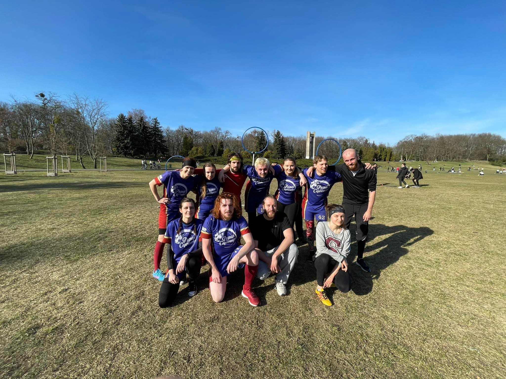

POZNAŃ CAPRICORNS - QUIDDITCH TEAM
Witamy na stronie poznańskiej drużyny quidditcha sportowego!
Witamy na stronie poznańskiej drużyny quidditcha sportowego!
|  | Wielkimi krokami zbliżają się pierwsze zawody ligowe w tym roku - już w dniach 14 - 15 maja w Łodzi gościć będą Mistrzostwa Polski - Spring Games 2022. W ramach przygotowań do zawodów oraz pozyskania nowych zawodników w niedzielę 27 marca odbył się pierwszy trening otwarty quidditcha w tym roku 😁 Bardzo dziękujemy za przybycie wszystkim uczestniczącym w grze, a także widzom którzy przyszli nas pooglądać - mamy nadzieję, że następnym razem do nas dołączycie 😉 Na początku spotkania opowiedzieliśmy trochę o sporcie i wytłumaczyliśmy zasady gry po czym przeszliśmy do ćwiczeń. Po wszystkim zagraliśmy pełny mecz, natomiast całemu wydarzeniu towarzyszyła piękna słoneczna pogoda. |
|---|
Dzisiejszy dzień jest wyjątkowy - nasza drużyna Poznań Capricorns - Quidditch Team obchodzi 5 urodziny. Ależ to szybko zleciało! 😍 Wiele wydarzyło się od założenia drużyny - mieliśmy wzloty i upadki, jednak cały czas pozostajemy silni 💪😄 Dziękujemy wszystkim, którzy nas wspierają i miejmy nadzieję, że następne 5 lat również będzie tak wspaniałe 🥳🎂🎂🎂